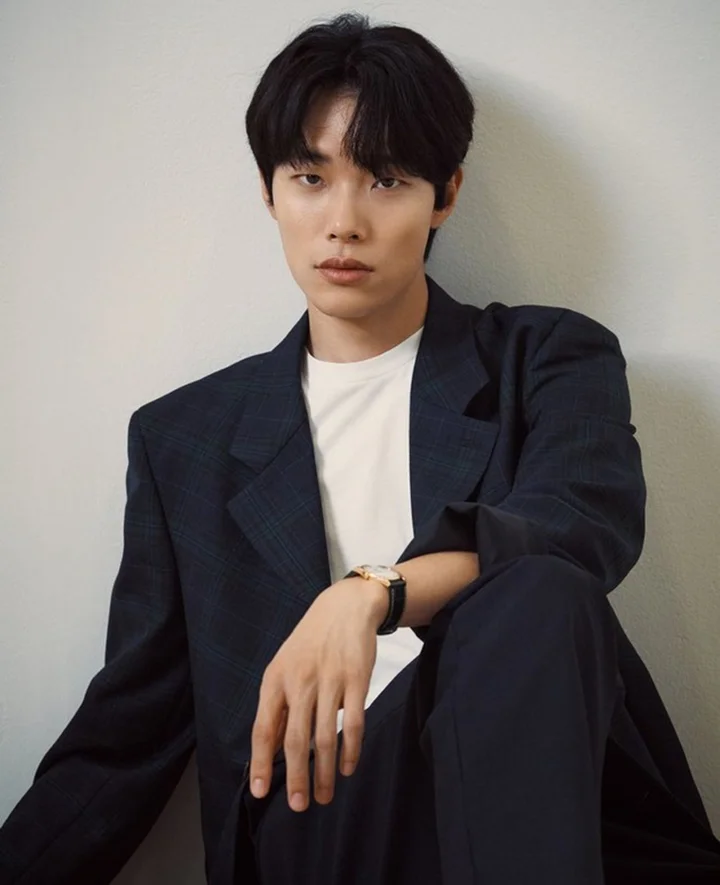

Review Ryu Jun Yeol: chàng diễn viên xấu lạ với mối tình tay ba dậy sóng
10:30 17/05/2024
Ryu Jun Yeol sinh ngày 25/09/1986 tại Suwon, Hàn Quốc. Có đam mê với diễn xuất từ bé, anh theo học chuyên ngành phim ảnh ở đại học Suwon. Tốt nghiệp xong, để không ảnh hưởng đến quá trình phát triển sự nghiệp sau này, Ryu Jun Yeol quyết định tham gia nhập ngũ. Cũng vì lý do này mà mãi đến tuổi 26, anh mới bắt đầu sự nghiệp diễn xuất của mình.
Ryu Jun Yeol sở hữu chiều cao 1,83m cùng gương mặt được cho là “xấu lạ” trong giới diễn viên Hàn Quốc, điều đó khiến anh được đánh giá là không phù hợp với ngành giải trí, đặc biệt là ở một nơi vốn ưa chuộng hình thức như Hàn Quốc. Nhưng Ryu Jun Yeol lại chinh phục khán giả bằng khả năng diễn xuất nhập tâm, chân thật cũng như mang nét duyên lạ mà không phải diễn viên nào cũng có thể sở hữu. Bộ phim đầu tiên mà anh tham gia là phim “Nowhere” ra mắt năm 2012. Dù chưa mang lại tiếng vang lớn, nhưng diễn xuất của anh cũng được giới chuyên môn đánh giá tốt. Mãi đến năm 2015, khi bộ phim “Reply 1988” lên sóng, tên tuổi của anh mới được nhiều khán giả biết đến và quan tâm một cách rộng rãi.

“Reply 1988” là bộ phim xoay quanh cuộc sống thường ngày của các gia đình trong 1 xóm nghèo vào những năm 80 ở Hàn Quốc. Tuy bộ phim không sở hữu dàn diễn viên hùng hậu, kịch bản ấn tượng, những drama lên đến cao trào nhưng đọng lại vô cùng sâu sắc đến trái tim của người xem thông qua câu chuyện tình cảm gia đình, tình làng nghĩa xóm, tình cảm lứa đôi. Trong phim, Ryu Jun Yeol vào vai Kim Jung Hwan một chàng trai sở hữu vẻ ngoài lạnh lùng, hay cằn nhằn nhưng bên trong lại mang một nội tâm vô cùng ấm áp. Cậu yêu thầm cô bạn Duk Sun ( do Lee Hye ri thủ vai) . Với những hành động, cử chỉ quan tâm, chăm sóc tới Duk Sun, tưởng chừng như về cuối phim, cả 2 sẽ thành đôi. Nhưng chỉ vì một chút chậm chân, một chút ngập ngừng mà Jung Hwan đã không thể tỏ tình với cô bạn thân, để rồi cô ấy chấp nhận tình cảm và hẹn hò với Choi Taek ( người bạn cùng chơi trong nhóm với cả hai, do Park Bo Gum thủ vai) . Bộ phim với cái kết để lại nhiều tiếc nuối cho những khán giả chèo thuyền “Jung Hwan-Duk Sun” nhưng cũng vì thế mà để lại ấn tượng cực kì sâu sắc cho khán giả mãi đến tận sau này. Với nét diễn trẻ trung, tinh nghịch nhưng lại rất nội tâm, Jun Yeol trở thành cái tên được đón nhận đông đảo trong làng điện ảnh xứ kim chi. Anh được người hâm hộ ghi nhận hơn và gọi với một cái tên thân thương là “Hwan mặt cún”
Bộ phim giúp nam diễn viên chiến thắng giải “Nam diễn viên mới xuất sắc nhất” tại Asia Artist Awards năm 2015 đồng thời là “Diễn viên mới xuất sắc nhất” tại Baeksang Arts Awards 2016. Tiếp nối thành công sau bộ phim, anh tham gia và đạt chiến tích với hàng loạt phim điện ảnh có thể kể đến như : Dạ điểu, The King, A taxi driver, Believer, … Có thể hơi kém duyên với mảng phim truyền hình, nhưng về mảng phim điện ảnh, anh liên tục đạt những thành tựu đáng nể, và được mệnh danh là “Bảo chứng phòng vé Hàn” khi bất cứ bộ phim nào anh tham gia đều đạt những thành công vang dội, đem lại doanh thu khủng, phá sâu những kỉ lục phòng vé ở Hàn Quốc.
Năm 2022, khối tài sản ròng của nam diễn viên được ước tính vào khoảng 17 triệu USD (tương đương 420 tỉ đồng) . Khối tài sản này bao gồm cát xê khủng tới từ bom tấn từ các phòng vé, hợp đồng quảng cáo và bất động sản giá trị. Dispatch từng hé lộ Ryu Jun Yeol sử dụng chiến lược đòn bẩy để đầu tư bất động sản và thu lãi khủng. Theo các chuyên gia, anh thu được lợi nhuận khủng lớn do không phải chịu thuế mua lại, phí xây dựng và phí lãi suất.Trước đó, nam diễn viên từng thành lập công ty tư nhân Deep Briding, cho mẹ đứng tên để có thể thế chấp khoản tiền mua đất và xây dựng.Sau đó, công ty quản lý của Ryu Jun Yeol đã phủ nhận tin đồn đầu cơ bất động sản. Tuy nhiên, lời giải thích đã không thuyết phục được công chúng. Vụ việc này đã khiến anh bị chỉ trích nặng nề trong một thời gian.
Quay lại với thời điểm năm 2015, sau khi bộ phim “Reply 1988” được ra mắt, dù để lại rất nhiều tiếc nuối trong lòng khán giả khi không thể thành đôi với Lee Hyeri. Nhưng ở ngoài đời, có những tin đồn cả hai đang hẹn hò. Cuối cùng, không thể giấu diếm trước cánh báo chí, cả hai đã công khai hẹn hè vào năm 2017. Chuyện tình đẹp như là mơ, đi ra từ phim của cặp đôi được nhiều fan hâm mộ ủng hộ cũng như dõi theo. Tưởng chừng như câu chuyện ấy sẽ có kết thúc đẹp với đám cưới cho cả hai sau 7 năm trời thì biến cố đã xảy ra. Mọi chuyện diễn biến khôn lường khi Han So Hee ( một nữ diễn viên vô cùng xinh đẹp ) xuất hiện.
Ngày 13/11/2023 mối tình của Ryu Jun Yeol và Lee Hye Ri chính thức kết thúc. Ngày 15/11/2023, Han So Hee cùng em gái tới tham quan triển lãm của Ryu Jun Yeol. Đầu năm 2024, cả 2 chính thức hẹn hò nhưng chưa công khai. Ngày 14/3/2024, một cư dân mạng đã đăng Twitter nói rằng mình đã gặp Ryu Jun Yeol và Han So Hee hẹn hò thân mật ở một bể bơi ở Hawaii. Dù công ty quản lý của cả 2 đã đăng bài trả lời truyền thông là họ không thể nói gì vì đây là đời tư của nghệ sĩ. Hye Ri lập tức đăng một Story Instagram với hàm ý Han So Hee là người thứ ba. Han So Hee cũng lập tức lên bài đáp trả với nội dung tôi không phải người thứ ba. Một ngày sau đó, trước áp luật của dư luận, Han So Hee đã đăng bài trên Blog thừa nhận đang hẹn hò với Ryu Jun Yeol, khẳng định mình không phải là tiểu tam cũng như xin lỗi Hye Ri và người hâm mộ vì những hành động bốc đồng của mình. Và cuối cùng, sau một thời gian, cả hai cũng chính thức đường ai nấy đi. Chuyện tình ngắn ngủi, chứa đựng nhiều drama và mang lại tiếng xấu cho cả hai.
Vậy câu hỏi được đặt ra là Ryu Jun Yeol là kẻ đáng thương, hay là người đáng trách trong drama tình cảm này đây. Trái ngược với Han So Hee, anh luôn giữ thái độ im lặng đến mức công chúng phải bất bình khi không đưa ra bất kỳ hành động nào dù Han So Hee bị công chúng chỉ trích dữ dội. Thay vì để Han So Hee hay Lee Hyeri lên bài mỉa mai, châm chọc nhau, Ryu Jun Yeol có thể đứng ra nhận trách nhiệm, xin lỗi cũng như giải thích rõ ràng mọi sự việc nhưng anh không hề có một động thái nào trước cánh báo chí và luôn giữ im lặng trong mọi tình huống. Hay anh ta chỉ là một kẻ đáng thương, khi đứng trước truyền thông, dư luận, cũng như bị phía công ty quản lý kiểm soát, anh không thể chính mình bày tỏ bất cứ bình luận hay lời giải thích nào ?
Dù là rơi vào trường hợp nào, thì Ryu Jun Yeol cũng vừa đáng trách, vừa đáng thương trong scandal trên. Sau drama này, dù trong mắt khán giả, anh ta đã không còn là diễn viên nhận được sự mến mộ, yêu quý như xưa nữa, nhưng mong tất cả mọi người vẫn sẽ giữ một sự khách quan nhất, khi xem phim cũng như thưởng thức các nhân vật của Ryu Jun Yeol trong thời gian tiếp theo vì suy cho cùng Jun Yeol đến với người hâm mộ không phải bằng vẻ ngoài ấn tượng, mà anh ấy đến với chúng ta bằng thực lực diễn xuất với rất nhiều bộ phim điện ảnh thu hút người xem.
Nhà Trần, kể cả Hậu Trần chỉ có một người duy nhất được phong là Thượng tướng Thái sư, tước Đại tứơng. Đó là Trần Quang Khải, con trai thứ ba của vua Trần Thái Tông và là em vua Trần Thánh Tông.
Thúy Vi sinh năm 1998, từng là một hotgirl mạng nổi tiếng vào thời gian 2013-2014 bởi vẻ ngoài xinh xắn và dễ thương của mình. Ở thời điểm đó cô từng được xuất hiện trên một số tạp chí dành cho giới trẻ với vai trò mẫu ảnh
Những vai diễn đầu đời với diễn xuất tự nhiên, thu hút, đôi mắt to tròn, gương mặt bầu bĩnh đáng yêu. Con đường nghệ thuật của Triệu Vy suôn sẻ, thuận lợi hơn rất nhiều so với chúng bạn cùng trang lứa
Duy Mạnh được biết đến là một nhạc sĩ kiêm ca sĩ tài năng trong showbiz Việt. Ngoài những bản hit đình đám sáng tác cho các ca sĩ nổi tiếng như Hãy về đây bên anh, Dĩ vãng cuộc tình, Biết tìm đâu anh cũng có một số ca khúc
Cộng động mạng đang truyền tai nhau vụ scandal Youtuber nổi tiếng Sang Vlog thực ra là một người khác xa với những gì thể hiện qua video. Anh thường xuyên có hành động tay chân với các bạn nhỏ tham gia quay Vlog nếu các bạn diễn không vừa ý
Thời gian gần đây cộng đồng mạng đang xôn xao lo lắng về thông tin Long Nón Lá - chàng rapper trẻ sinh năm 2000 từng tham gia chương trình Rap Việt mùa 3 đang trong giai đoạn chữa trị căn bệnh ung thư quái ác